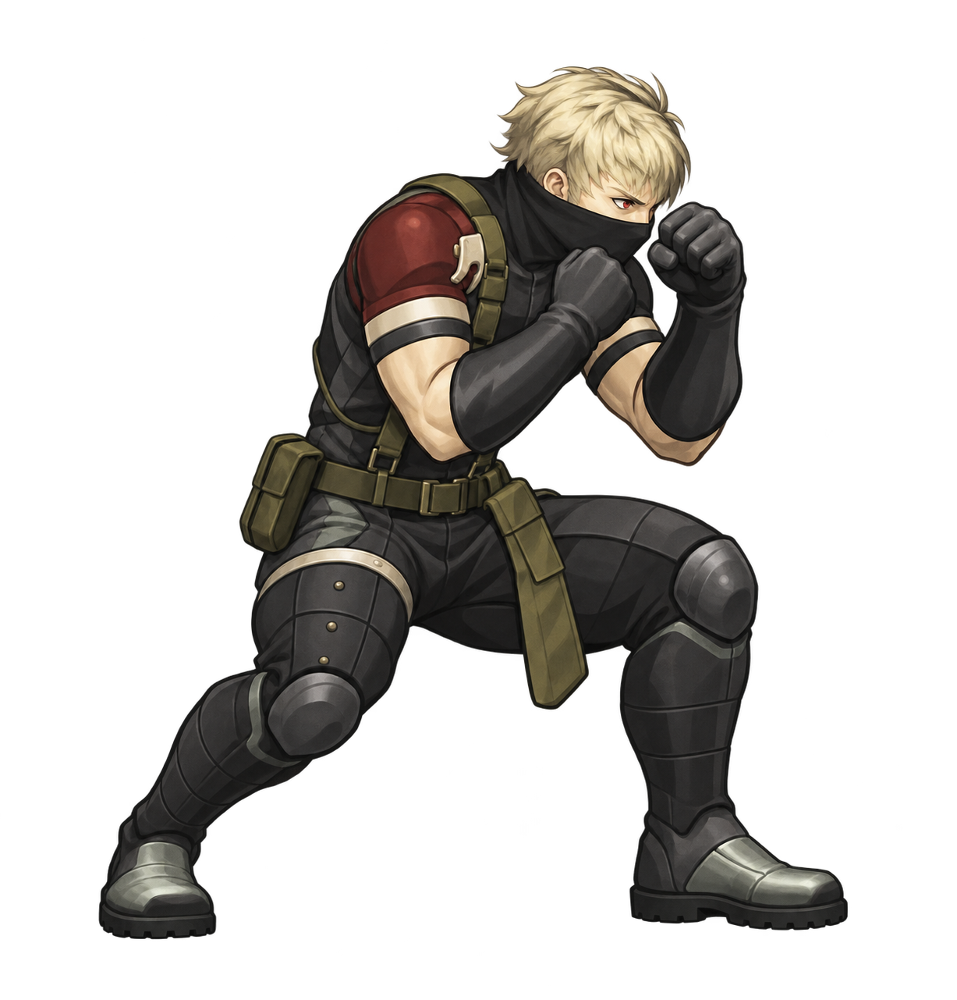
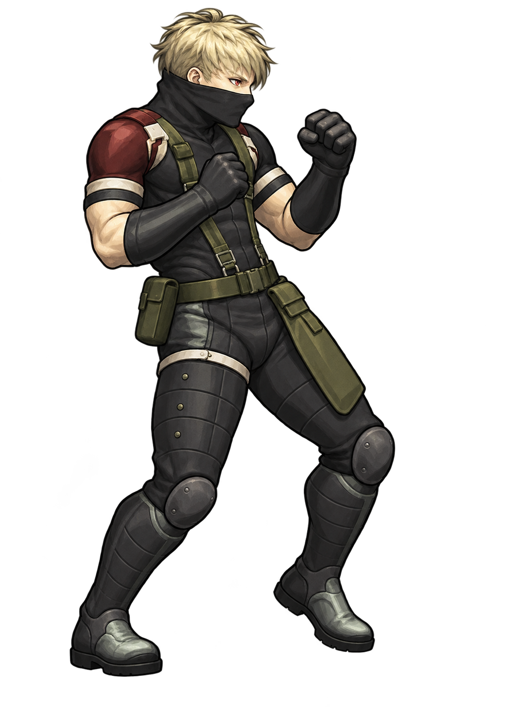
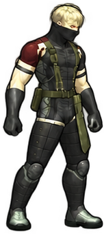

CQC Versus Legacy · production P53
Null · poses défensives
Portable Ops · incarnation d’origine · orientation droite
Deux dessins distincts : protéger le corps en position basse, puis reprendre appui après un pas en arrière.
Études à examiner
Garde basse
Appuis écartés, buste avancé et protection du haut du corps.
1 227 × 1 281 · PNG RGBA · une figure
Reprise d’appui arrière
Poids sur l’appui arrière, pied avant relevé et mains maintenues en garde.
1 062 × 1 481 · PNG RGBA · une figure
Référence du projet
Le masque, les cheveux blonds, le harnais olive, l’épaule rouge et les protections reprennent le dessin existant de Null. Les deux nouvelles poses sont des interprétations pour CQC.
Les deux images sont affichées séparément pour examiner leurs proportions. L’échelle et les transitions de combat restent à calibrer.État d’intégration
Les poses sont livrées comme PNG individuels. Elles ne constituent pas un cycle animé. L’admission au moteur, les durées, la vue gauche et la validation avec les références du jeu restent à effectuer.